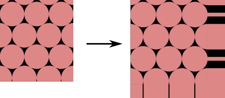
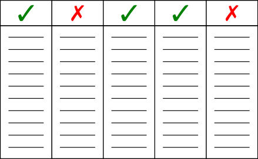

While the competition proceeds, I will attempt several iterations of a
classifier model. These will be a combination of my own ideas, research, and
ideas from the community Kaggle provides.
For each model I provide preprocessing options. Some preprocessing is
strictly necessary, but some make work in combination with certain models
better than others. How the preprocessing options are used will be specified
for each model. For the ISIC dataset, two major components exist. For each
skin lesion their is an image and a set of recorded features about the case.
Both must be preprocessed, but are done so distinctively.
Rescaling Color - Color in images is represented by 3 channels per
pixel. One each for red, green, and blue. The intensity of the color in
their respective channel is described on a range from 0 to 255. Machine
learning models often do better on smaller scales so it is important to be
able to redefine the intensity. In general, this process will linearly scale
the channels (e.g. map [0,255] → [0,1]).
Padding - The images of the dataset are all different dimensions; varied
widths and heights. For most models, it is important they be consistent. One
way to accomplish this is simply expanding the smaller images to match the
largest one. Padding will add pixels around the edges of an image to create
the desired dimensions. The extra space can be filled in many ways, but for
our purposes the filled space will match the edge-most pixels of the
original image.

Cropping - Another way to resize all images consistently, is to crop the
larger images to match the size of the smallest image. This has an added
benefit of augmenting our dataset in that most images will have multiple
representations, as a window smaller than the image is moved randomly about
to create the cropping.
Selection - Choosing which features are relevant and which might leak
target information to the model in training is important to the
generalization of the model. A few examples:
Features like ID tags can be excluded for being unique and arbitrary.
Features which all contain the same value can be can be excluded for
being uninformative.
Features which describe biopsy results can be excluded for leaking
target information (as a benign lesion would have no biopsy results).

Ordinal Encoding - Some features are made up of various categories.
If these are described in text, it is difficult for many models to use.
Since numerical values are more easily understood, each category
within a feature a is assigned unique number, easily translating the
information while preserving the idea behind the categories.
Fill NaN - When data is incomplete, values are generally still
expected by the models for every data point. So, a decision must be
made on how to fill in missing data. Average values from the data
points that are complete can be used, or just a value that would
otherwise never exist for that feature.
A vision transformer taking features as query tokens for the decoder. Image and
features are preprocessed, features are fed to a feature reducer, then all
combined by a transformer to produce a classification.
Images - All image channels are linearly rescaled from [0,255] to [0,1].
In the case of the ISIC dataset, the smallest images forced a smaller cropping
of images than desired, so first images are padded to 200x200 (images larger
than this are unpadded), then all images are cropped to 125x125. The cropping
window positioning is selected randomly each time the image is loaded from the
dataset.
Features -
Exclusions: Identification features are excluded from training data for being
irrelevant to diagnosis. These include “isic_id”, “patient_id”, “lesion_id”,
“attribution”, “copyright_license”. Further, features which exist only because
of a confirmed diagnosis are excluded, including “iddx_full”, “iddx_1”,
“iddx_2”, “iddx_3”, “iddx_4”, “iddx_5”, “mel_mitotic_index”, “mel_thick_mm”,
“tbp_lv_dnn_lesion_confidence”.
Ordinal Encoding: All text classifications which remain are assigned a
unique (within each feature) id number in place of the text description.
Fill NaN: Some “age_approx” values are missing, so these are filled as
-1 to help the model distinguish and lean less on this less distinctive
information.
Fig. 1 shows how the information provided by the ISIC dataset is
processed. First, a feature reducer transforms the features which compliment the
images. This focuses the model on the most meaningful feature information
allowing for more effective use of the available data. In particular, for this
iteration of the model, Principal Component Analysis (PCA) is used including
enough dimensions to explain 99.99% of variance in the data.
Next, embeddings are created for both the image and the reduced feature set.
For the features, this is a small fully connected neural network; 2 layers with
a ReLU activation in between, the initial layer 64 nodes wide, the next twice
that, with the idea to create two 64 feature queries for the transformer
decoder. For the image, two embeddings are created. One, a patch embedding to
reduce the sequence length input into the transformer encoder, following the
idea of Vaswani et al. [VSP+23]. Here, a patch of pixels
have their channel values concatenated, trading a greater number of features for
fewer transformer inputs. Further, a linear transformation is applied to allow
for varied patch sizes while maintaining a consistent feature dimension between
all embeddings. Two, a positional embedding is used to maintain information of
relative placement between patches. An embedding space of learnable parameters
is created the size of NxM, where N is the number of patches and M the desired
dimension of the features (again, 64 in this case).
The image embeddings, patch and positional, are then summed before taken as
input to the attention-based transformer encoder. The encoder has 4 layers of
attention with 8 heads, add and normalization, and 1024 dimension feed forward
networks (typical transformer encoder layers provided by
Vaswani et al. [VSP+23]). The result then used as memory in
conjunction with the queries created of the feature embeddings as input to the
decoder. The decoder is of similar dimension to the encoder.
Finally, the two queries create 2 sets of 1024 dimension outputs from the
transformer, which are flattened and passed to a linear layer to reduce all the
information down to logits representing whether the lesion is benign (dim 0) or
malignant (dim 1).
To train the model first the feature reducer, PCA, is fit to the available
feature data. This process is quick and straightforward.
The trained feature reducer can then be used to feed the classifier model.
Training the classifier requires a balancing of the classifications. There
exist 400,666 benign lesions to 393 malignant, an imbalance which causes
little to be learned about malignant lesions. To address this, all available
malignant examples are duplicated within the dataset to create a roughly
equal number number of positive and negative classification examples.
With a balanced training set, a K-fold scheme is used to divide the dataset
into training and validation subsets. 4 folds were used in training.
An Adam based optimizer is used for its ability to achieve reasonable
results without significant effort put into tuning of hyperparameters.
To assess loss, cross entropy is used, taking the logits of the transformer
compared to the target provided by the data set.
Over 4 iterations over the 4 folds, accuracy, precision, and recall end up
over 99%. However, once tested in competition, the score achieved is quite
poor, an pAUC of 0.021.
A poor score was expected, as multiple epochs have not yet been introduced
to the training regimen. However, given the training results compared to the
test, it is clear there is also a significant amount of information leakage.
Care must be taken in the balancing of the dataset so that some of the
malignant examples are held for the validation set and are in no way a part
of the training set. Further, it is important the K-fold process not use the
same model for different folds. Attention to these issues should make for a
better generalizing model.
Weights in the loss function may also help better balance the dataset and
enable better generalization, but will come at a cost of requiring many
training epochs.
Taking from the lessons learned in 1.0, corrections have been made to
prevent information leakage between training and validation data.
Additionally, scalable training has been introduced courtesy of the Ray
python library:cite:moritz2018raydistributedframeworkemerging.
To address the training set class imbalance, and to avoid data leakage,
weights have been applied to the cross entropy loss calculation. The impact
of loss calculated based on benign labels then is significantly less than
that of the malignant labels, with a weight of 393/401,059 to malignant’s
400,666/401,059. Given the very few number of malignant examples, it is
still expected many epochs will be necessary for good performance. A future
goal remains to balance the the dataset by duplicating malignant examples.
Each epoch will be more effective, and it affords the opportunity to
augment the dataset in other ways like various transformations of the
images.
With Ray:cite:moritz2018raydistributedframeworkemerging, hardware
requirements can be defined per training instance. Then, depending on the
resources made available to the ray server, multiple training instances can
be run simultaneously, seen below in Fig. 2.
Additionally, Ray provides a tuning module which allows an easy means of
exploring multiple training configurations, along with the application of
optimization algorithms. Specifically, for this version, 4 feature reduction
techniques are explored: none at all, and principal component analysis fit
to explain 80%, 99%, and 99.99% of data variance.
A vision transformer taking features as query tokens for the decoder. Image and
features are preprocessed, features are fed to a feature reducer, then all
combined by a transformer to produce a classification.